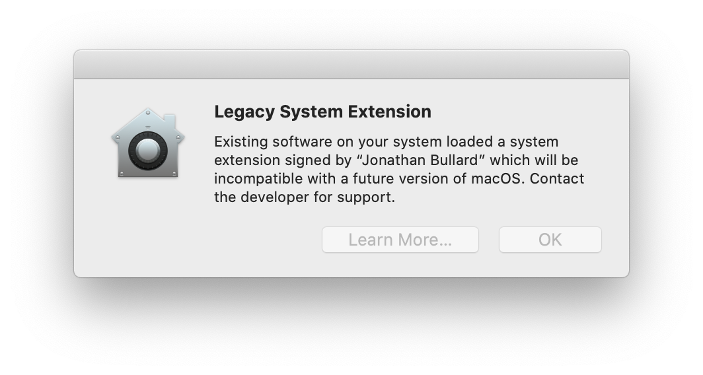

|
Highlighted Articles |
The Future of Tun and Tap VPNs on macOSOn This Page BackgroundTo connect to a VPN, Tunnelblick needs to use a special kind of device driver:
Apple has made it more and more difficult to load system extensions with each new version of macOS. They have also announced that in "a future version" of macOS, you will not be able to use system extensions at all. The Long-Term ProblemApple has announced changes to macOS which affect many users of Tunnelblick. You might see a warning from Tunnelblick about this change, or you might see the following warning when connecting your VPN:  What this means is:
When will this happen?Apple does not announce its intentions in advance, so there may not be any prior notice of this change. It could appear at any time, but in the past similar changes were often included in the last point release before a new version of macOS. On older versions of macOS or OS X, Tunnelblick loaded and unloaded Tun and Tap system extensions without any user interaction – it was done automatically, as needed. However, that cannot be done on recent versions of macOS and with each new version of macOS Apple has made it more difficult to use the system extensions at all. Although the initial setup to use the system extensions needs only be done one time, it is becoming more and more burdensome:
How to tell if a VPN requires a Tun or Tap System ExtensionTunnelblick will warn you if one or more of your VPNs requires a Tun or Tap system extension, but you will not see this warning if you clicked "do not warn me about this again". You can "Reset Disabled Warnings" (on the "Preferences" panel of Tunnelblick's "VPN Details" window) and then quit and relaunch Tunnelblick to be warned about the problem, or you can do the following for each of your VPN configurations:
How to modify a Tun VPN so it will not require the Tun system extensionFirst, make sure the VPN does not have "Always load Tun driver" selected in the "Advanced" settings window. Then, you need to remove the dev-node option if it exists in the VPN's OpenVPN configuration file and make sure a "dev tun" option exists:
If you made changes to the file and did not change it from shared to private and back to shared, the next time you connect the configuration you will be asked to have a computer administrator authorize the changes. If macOS still complainsAlways load tun or always load tapIf you have a Tun VPN which does not need to be modified, or has been modified as described above, and Tunnelblick or macOS still complains, then you have changed a Tunnelblick setting and should restore it to the default setting. All configurations should be set to "Load tun driver automatically" and "Load tap driver automatically". These settings are found on the "Connecting & Disconnecting" tab of the "Advanced" settings window. Recent versions of Tunnelblick will automatically disable loading of "tun" and "tap" system extensions on versions of macOS that do not allow Tunnelblick to load them. Old versions of Tunnelblick will not helpThis situation is caused by changes in macOS, not a change in Tunnelblick, so older versions of Tunnelblick will not help. All Macs running OS X 10.10 or later should use the latest stable or beta version of Tunnelblick. See Deprecated Downloads for a version of Tunnelblick that should be used on earlier versions of OS X and on all PowerPC Macs. What Apple announcedApple has announced that "future OS releases will no longer load system extensions that use deprecated KPIs by default". Tunnelblick's Tun and Tap system extensions use some of the deprecated KPIs.
It isn't clear what Apple means by the phrase "by default". It may mean that Apple will provide a mechanism for users to allow loading of system extensions that use deprecated KPIs. However, Apple's practice has been to make such mechanisms very difficult to use, and the warning in macOS does not indicate such a mechanism will be provided. The Origin of Tunnelblick's Tun and Tap system extensionsTunnelblick uses customized versions of the Tun and Tap system extensions from tuntaposx that were written by Mattias Nissler. tuntaposx has not been actively maintained for several years and the extensions are not notarized, so they cannot be used on recent versions of macOS. The changes made to tuntaposx for Tunnelblick primarily identify the system extensions as parts of Tunnelblick and allow them to be built with modern versions of Xcode and for Apple Silicon. Tunnelblick's Tun and Tap system extensions are signed and notarized to allow them to be used on recent versions of macOS. What is Tunnelblick doing about it?In the short term: Apple proposes that programs such as Tunnelblick be modified to use a different method to accomplish the function that the system extensions currently perform. The current Tunnelblick developers do not have the time or expertise to use the new method Apple proposes and have no plans to do so. It is possible that someone else will develop such an alternative method and make it publicly available, but there is no way to know if or when that will happen. If it does happen, we expect to include it in Tunnelblick. In the longer term: We expect it to continue to support Tun configurations using "utun" indefinitely. However, at some point in the future when Tunnelblick no longer supports versions of macOS that can load system extensions, system extension loading and unloading will probably be removed from Tunnelblick and Tunnelblick will no longer support Tap configurations. Historically, Tunnelblick has supported several years of macOS releases. As of February 2022 Tunnelblick supports OS X and macOS versions as far back as 10.10, which was released in 2014, so it is anticipated that the removal will not take place until the mid- to late-2020s. |
| Tunnelblick | free software for OpenVPN on macOS | We need translators for several languages… |